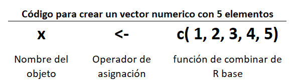
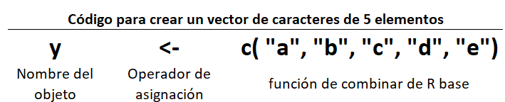
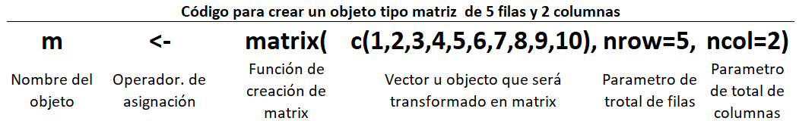
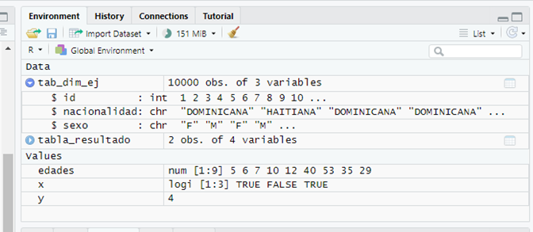
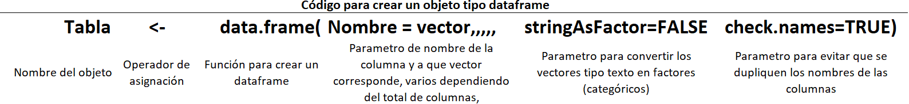
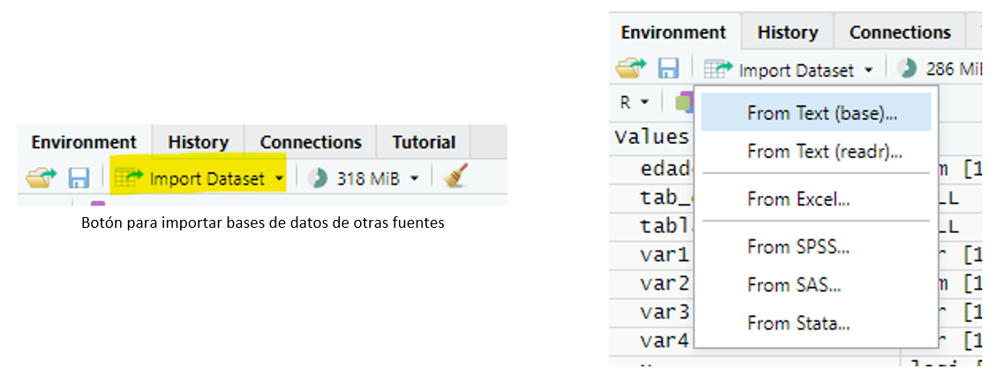
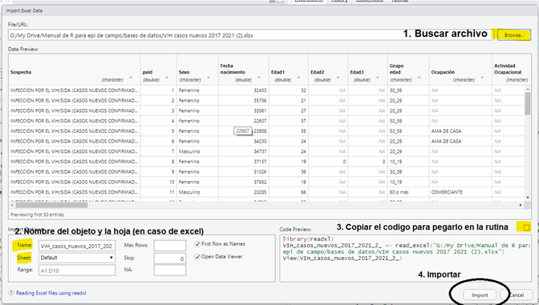
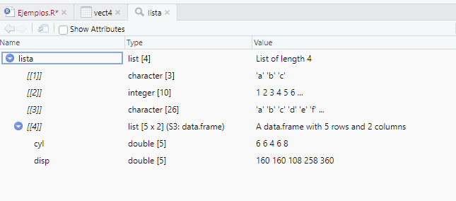
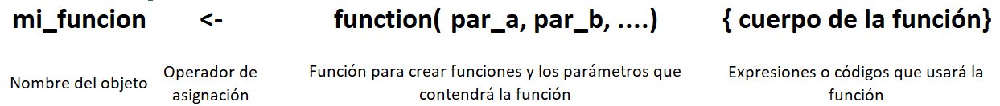

Otro elemento de suma importancia a conocer cuando se trabaja con R, así como vimos la importancia de las rutinas, son los objetos y sus diferentes tipos, dado que es con esto que trabajamos. Son básicamente los contenedores de los datos, que R los almacena en la memoria del computador, es decir, a partir de estos es que haremos nuestras salidas como tablas, gráficos, reportes a través de la transformación (declarar, nombrar, filtrar reemplazar), entre otras. Básicamente los objetos son el fundamento de todo.
En R, hay 5 tipos de objetos de datos y se dividen en dos grupos de objetos: los que son de un solo tipo de dato (atómicos) o los que tienen varios tipos de datos (recursivos). Empecemos con los atómicos.
5.1 Vectores
Dentro de los objetos atómicos tenemos los vectores, los cuales no tienen dimensión, es decir, no están compuestos por filas o columnas como un dataframe, y pueden ser de clase numérica (entero y decimal), integer (números enteros solamente), caracter o texto, lógico (TRUE, FALSE) y factor (jerarquía en los valores). Un ejemplo de creación de un vector es el siguiente:


Para los vectores que son de caracteres o texto, si al crearlos les ponemos números sin comillas, cuando los llamemos serán reconocidos como texto, por lo tanto, no se pueden hacer operaciones matemáticas con estos vectores aunque sean números.
Si escribes “x” (o el nombre que hayas usado para crear el vector) y presionas Enter, en la consola observaras los elementos contenidos en este vector.
Una de las funcionalidades más interesantes de R es que, en el caso de vectores numéricos, si haces una operación matemática como 5 + x (nombre del vector), la operación se hará en todos los elementos del vector, es decir, el 5 se sumará con cada uno de los números. Si haces esto con un vector de texto o carácter, en la consola observarás un error que es una operación entre un argumento no numérico contra otro numérico.
A medida que avancemos con el desarrollo de los productos vamos a ver que los vectores los usamos de forma constante; un ejemplo común es crear un vector con los nombres de las provincias o municipios de interés para luego poder hacer un filtro invocando dicho vector. También se puede hacer combinando varios tipos de vectores con las mismas dimensiones, es decir, el mismo número de elementos podemos “unirlos” y formar un nuevo objeto como un dataframe o una lista.
5.2 Matrices
Otro tipo de objeto atómico o que solo admite un tipo de valor es la matriz que es básicamente un vector pero con dos dimensiones (columnas y filas) se crean usando la función matrix() y se le debe agregar el parámetro del total de filas así como el total de columnas por ejemplo de la siguiente forma:

No entraremos detalles ahora con los objetos de tipo matriz porque estos objetos tienen sus usos bien específicos y no vamos a usarlos de forma constante como lo haremos con los vectores.
5.3 Dataframes (conjunto de datos)
Ahora vamos a ver uno de los objetos más importantes que vamos a usar, los dataframes, que es un objeto de tipo recursivo o que admite varios tipos de datos (texto, numérico, lógico) y es idéntico a una tabla, es decir, tiene dos dimensiones, columnas y filas. Las columnas se pueden ver como si fueran variables y las filas son los valores contenidos en esta variable.
Para los trabajos que vamos a realizar, este será el tipo de objeto con el que más nos sentiremos familiarizados, dado que lo más parecido a un dataframe es una base de datos, ya sea en Excel u otro tipo de programa.
Una de las ventajas que tiene Rstudio es que nos ayuda a ver fácilmente la estructura del objeto dataframe, cuantas variables o columnas y cuantas filas u observaciones contiene para visualizar el contenido.

Panel de ambiente de trabajo en Rstudio donde podemos ver los objetos de datos disponibles, en esta imagen podemos ver dos dataframes (tab_dim_ej y tabla_resultado) y debajo, en la categoría de values, 3 vectores, (edades, x y “y”) . Rstudio nos permite diferencial rápidamente también ver los atributos de cada elemento. Para saber más sobre los tipos de objetos podemos usar dos funciones str() y class(), la primera para ver la estructura y la segunda para ver que clase de objeto es.
Para comenzar a usar los dataframes tenemos dos formas de hacerlo. Primero, creándolo directamente escribiendo los datos que usaremos, combinando varios vectores para crear una tabla como en el siguiente ejemplo:
var1 <-c("maria", "pedro", "juan", "jose") #creamos un vector con nombres por ejemplo var2 <-c(25, 40, 30, 35) #creamos otro vector con las edades var3 <-c("F", "M", "M", "M") #creamos otro vector con el sexo var4 <-c("LR", "SD", "SC", "PP") # creamos otro vector con la procedencia tabla <-data.frame(nombre=var1, edad=var2, sexo=var3, prov=var4)tabla
nombre edad sexo prov
1 maria 25 F LR
2 pedro 40 M SD
3 juan 30 M SC
4 jose 35 M PP

Anatomía de la función data.frame() para crear un dataframe. en R las funciones vienen con valores en los parámetros de forma predeterminada, incluso no hay que escribirlos. Un ejemplo es en esta función de data.frame() el parámetro check.names=TRUE viene predeterminado y por ende no hay que escribirlo.
Entonces si ejecutamos las líneas anteriores vamos a tener como resultado un dataframe nuevo con 4 variables y 4 observaciones. ¡Ojo! los vectores deben de tener la misma cantidad de elementos, de lo contrario, veremos el siguiente error: “Error in data.frame(nombre = var1, edad = var2, sexo = var3, prov = var4) : arguments imply differing number of rows: 4, 3”, esto significa que uno de los vectores no tiene la misma cantidad de elementos.
Para corregir esto, si el valor es desconocido en el vector que nos falta un elemento, solo agregamos un elemento nuevo llamado NA, sin comillas, que es una forma de decirle a R que el valor es desconocido, posteriormente, ejecutamos de nuevo las líneas donde hicimos el cambio para actualizar ¡y listo!
Este abordaje puede ser útil para tablas pequeñas, pero cuando tenemos que trabajar con bases de datos que tienen cientos o miles de observaciones, entonces creamos un dataframe importando los datos desde diferentes fuentes, como archivos de Excel, desde archivos de texto, incluso archivos nativos de otros programas estadísticos como SPSS o STATA.
En Rstudio podemos, sin necesidad de escribir una expresión o comando, usar el botón de “import Dataset” en el panel de ambiente de trabajo, y al hacer clic, se despliega un menú para diferentes tipos de formatos de bases de datos como Excel, csv, txt, SPSS, SAS o Stata.

Botón para importar bases de datos de otras fuentes
Después de hacer clic en uno de los formatos, (ejemplo Excel) se abre una ventana para seleccionar el archivo de la base de datos, que variables o columnas vamos a incluir además de otros parámetros.

Pasos para importar un dataframe usando Rstudio
De forma predeterminada, en el nombre del objeto o dataframe estará el nombre del archivo de la base de datos, y puedes cambiarlo a un nombre más amigable (ejemplo bd o base). Si estás usando un archivo de Excel que contiene varias hojas, puedes especificar cual hoja usarás en “sheet”, incluso, puedes elegir el rango de filas que usarás en caso de que no quieras seleccionar la hoja completa. De igual manera, puedes poner desde cuál fila se leerá el archivo, esto es importante si la base de datos en Excel tiene títulos y los datos se comienzan a partir de la 3ra o 4ta fila, en este caso, puedes en “skip” omitir la fila o las filas que no son necesarias.
Por último, si este proceso lo vas a usar repetidamente, debes copiar el código que está en el campo inferior derecho de la ventana y pegarlo en el panel de editor de rutinas, para que lo tengas en tu rutina, y desde ahí, puedes modificarlo de ser necesario, pues realmente este es un aditamento visual dado que Rstudio está generando un código para que no tengas que escribirlo; básicamente, está cargando el paquete readxl y usando la función de importar archivos de Excel llamada read_excel().
Otra forma para cargar bases de datos muy parecida a la que vimos anteriormente es usando el paquete rio (input/output) y el paquete here en combinación con la función import() y la función here(), que nos ahorra escribir toda la ruta del archivo de la base de datos cuando estamos en un proyecto en Rstudio. A continuación, un ejemplo:
La base de datos que vamos a importar está ubicada en la carpeta de Base de datos, solo necesitamos saber el nombre del archivo que vamos a usar, en este caso, tiene el nombre de “base de datos ejemplo.xlsx”:
pacman::p_load(rio) #Para cargar el paquete {rio}mi_base_ejemplo <-import(here("Bases de datos", "base de datos ejemplo.xlsx"), setclass="tibble")
Para ver la base de datos utilizamos la función View(), con ella invocamos el visor de datos, o simplemente utilizamos la función head() para ver las primeras observaciones del dataframe en la consola. Como buena práctica, después de importar la base de datos en un dataframe, es ver su estructura para determinar si las columnas se importaron correctamente, esto podemos hacerlo viendo en el panel de ambiente de trabajo desplegando la flecha a la izquierda del nombre del dataframe o escribiendo en la consola la función str() donde vamos a ver el nombre de la variable, de qué clase es (chr si es texto, num si es numérico, logi si es lógico (true/false), int si es interger, etc.
Cuando sabemos de antemano que una variable es de tipo fecha, pero aparece como número luego de importar la base de datos, podemos transformarla a su formato original de fecha. Más adelante veremos cómo se hace.
En la siguiente tabla se resumen las funciones que nos servirán para revisar un dataframe. Al usarlas en la rutina, solo debemos poner el nombre del dataframe dentro de los paréntesis.
Si vemos por ejemplo que una variable que sabemos de antemano que es una fecha está como tipo numérica, luego podemos transformarla a su tipo original. Más adelante veremos cómo se hace.
Funciones que nos sirven para revisar un dataframe (solo debemos poner el nombre del dataframe dentro de los paréntesis)
Función
Efecto
head()
Muestra las 6 primeras filas
tail()
Muestra las ultimas 6 filas
dim()
Nos muestra las dimensiones del dataframe, total de observaciones y total de columnas
nrow()
Nos muestra el total de filas u observaciones
ncol()
Nos muestra el total de columnas
str()
Nos hace un resumen de la estructura del dataframe, columna por columna
names() o colnames()
Nos muestra los nombres de las columnas
Los resultados que arrojan estas funciones podemos guardarlas en un objeto, para fines del ejemplo, lo denominaremos “vector”. Si queremos comparar el total de columnas de un dataframe vs otro (por ejemplo, cuando queremos comparar un corte de la base de datos de una fecha vs otro corte) podemos crear el vector col_dataframe_1 <- ncol(dataframe1) y el vector col_dataframe_2 <- ncol(dataframe2) y luego comparar: col_dataframe1 ==col_dataframe2, si tenemos el resultado TRUE, pues ambos dataframes tienen la misma cantidad de columnas, de lo contrario, uno de los dataframes tiene columnas de menos o de más.
Por igual, si hacemos el mismo ejercicio para ver cuántas filas ha crecido una base de datos podemos usar la función nrow() y restar el vector del dataframe2 – dataframe1 para obtener la diferencia de filas.
Esto es un ejemplo muy sencillo pero muchos procedimientos de transformación de datos usamos estas funciones.
5.4 Listas
Otro tipo de objeto que usa R son las listas, que es un tipo de objeto recursivo o que admite diferentes formatos de elementos. Las listas básicamente son objetos que combinan varios objetos que pueden ser matrices, vectores, dataframes, sin restricciones. En resumen, las listas son mini contenedores, y se usan mucho para las funciones cuando necesitamos “pegar” o usar objetos de diferentes formatos para obtener un solo resultado. También son útiles cuando hacemos “for loops” o bucles, para hacer tareas repetitivas. El manejo de listas es un poco avanzado para comenzar a trabajar en R, pero son muy importantes y no pueden ser pasadas por alto en este nivel básico.
Cuando tratamos de visualizar una lista, lo primero que vemos es el orden del objeto dentro de doble corchete y luego el contenido del objeto. Copia el siguiente texto y pégalo en la consola para que veas un ejemplo:
#vamos a crear varios objetos vect1 <-c("a", "b", "c")vect2 <-c(seq(1:10))vect3 <- lettersvect4 <- mtcars[1:5,2:3]#vamos a crear una lista de objetoslista <-list(vect1, vect2, vect3, vect4)
Si desde la misma consola llamamos al objeto lista que creamos, con solo escribir nombre del objeto, “lista” en este caso, tendremos el siguiente resultado:
También desde el panel del ambiente de trabajo en Rstudio podemos ver los objetos tipo listas, cuantos elementos tiene y si desplegamos podemos ver sus elementos, así como también el tipo de elemento y características.

Si queremos llamar un objeto dentro de una lista simplemente escribimos el nombre de la lista abrimos doble corchete y ponemos dentro el numero de orden que corresponde el elemento que queremos,
lista[[1]] #nos nos arroja el resultado de todo el contenido del elemento 1, que en este caso es un vector
[1] "a" "b" "c"
Dentro de los ejercicios que vamos a hacer usaremos las listas, por ejemplo, con estas podemos cargar múltiples archivos como objetos desde una carpeta para facilitar el proceso de importación.
Aquí un escenario de ejemplo:
En la carpeta de “datos” o “Fuente” dentro del proyecto en que se esté trabajando digamos que hay 3 bases de datos en formato excel con similar estructura (ejemplo, provincia_a.xlsx, provincia_b.xlsx, provincia_c.xlsx) y la tarea es unir estas bases de datos en una sola base de datos:
#Cargando el paquete {rio} para importar bases de datos y {tidyverse} para manipulación de datospacman::p_load(rio, tidyverse) #para crear un vector con las rutas completa de varios archivosruta_archivos <-dir("datos", #nombre de la carpeta donde están los archivos fuentepattern ="xlsx", #patrón presente en todos los archivos a importarfull.names =TRUE#argumento para crear la ruta completa de cada archivo )lista_bases <-map(ruta_archivos, import)# la funcion map (que viene de tidyiverse) va a crear un objeto lista que va a contener cada una de las bases de datos que fueron especificadas en el vector ruta_archivoshead(lista_bases[[1]]) #este comando nos permite ver las primeras 5 filas en la base de datos localizada en la posición 1
5.5 Funciones
Otro tipo de objeto que no necesariamente almacena datos, pero sí podemos crear objetos de datos, son las funciones. Si te has dado cuenta, hasta ahora se han mencionado mucho dado que todo el código que vamos a ir escribiendo se hace mayormente con funciones, de hecho, como se mencionó arriba, la mayoría de los paquetes son una compilación de funciones. Nosotros podemos crear funciones que usan funciones ya sean de R base o incluso de otros paquetes.
Las funciones nos ayudan a agilizar el trabajo porque son un conjunto de instrucciones dentro de nuestra rutina. Un ejemplo de esto es que podemos crear una función que nos produzca un gráfico de curva epidémica de un período y lugar determinados y obtendríamos el resultado, el gráfico, y los dos parámetros: el periodo y el lugar.
Para crear una función usamos la siguiente sintaxis:

Vamos hacer un ejercicio simple para entender mejor una función:
#una funcion para calcular el indice de masa corporalmi_funcion <-function(peso, altura){ resultado <-round(peso/(altura/100)^2,2) #asigna al elemento resultado el la operación entre peso y altura y luego redondear el valorprint(paste0("Formula: ",peso,"kg./",altura/100,"(m)2")) # retorna un texto con el peso y la alturaprint(paste0("El indice de masa corporal es ", resultado)) # retorna el en un solo texto el indice de masa corporal obtenido}mi_funcion(peso=115,altura=180) #llamamos la funcion y escribimos los parametros
[1] "Formula: 115kg./1.8(m)2"
[1] "El indice de masa corporal es 35.49"
Para entender mejor cómo trabaja una función usando el ejemplo anterior, escribimos la función function(){ } luego del nombre de la función y el operador de asignación, y dentro de los paréntesis escribimos el nombre que queremos usar para los parámetros separados por coma, como hicimos en el ejemplo anterior, usamos peso y altura. Luego, dentro de las llaves vamos a proceder a escribir las expresiones para obtener un resultado; para esta función que calcula el índice de masa corporal (IMC), creamos un vector que es el resultado de la operación de la fórmula del IMC, donde el parámetro 1 es el peso que es dividido entre el parámetro 2, luego el parámetro 2 que es la altura, que a su vez es dividida entre 100 y luego elevada al cuadrado; la siguiente expresión presenta un texto con los parámetros y luego presenta otro texto con el resultado del IMC.
De las funciones se pueden escribir libros, de hecho, hay una vasta documentación de cómo trabajar con ellas, pues son el pilar de la programación en R.
Cuando te sientas más familiarizado y tengas más experiencia en R, puedes dedicarle tiempo a aprender sobre cómo trabajar más profundamente con las funciones. Por ahora, vamos a enfocarnos en los paquetes, que tienen funciones que nos facilitan el trabajo para el análisis de datos.